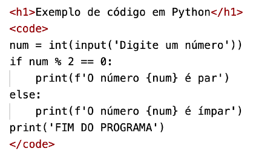
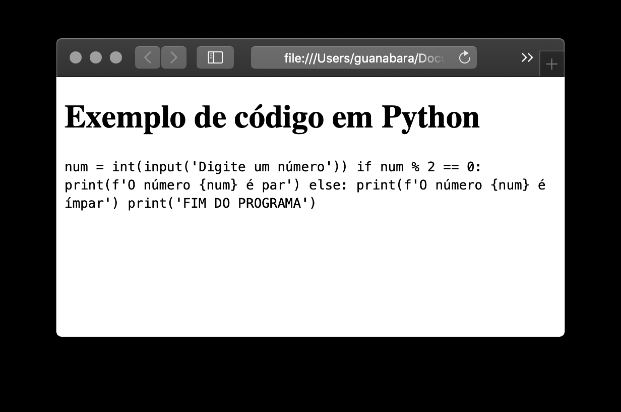

Nós somos (ou seremos) programadores, e por isso compartilhamos muito códigofonte em diversas linguagens. Para isso, existe a tag <code> da HTML onde você pode delimitar seu código. A principal vantagem no uso dessa tag é a o valor semântico que ela representa, indicando ao navegador que se trata de um código de computador. Porém, existe também um efeito visual, pois as letras ficam no modo mono-espaçadas (monospace), o que facilita bastante a leitura do código. Analise, por exemplo, o trecho de código a seguir:
|  |  |
AS TAGS, UNIDAS JAMAIS SERÃO VENCIDAS! No exemplo acima você pode perceber que adicionamos uma tag dentro da outra. Quando isso acontece, é como se elas juntassem suas forças para gerar um resultado ainda mais poderoso. É possível então juntar <strong> e <em> e gerar um resultado como esse:
em negrito e em itálico ao mesmo tempo!
Se você já escreveu um texto sequer na sua vida, com certeza já teve que fazer citações. Uma citação é um trecho de texto, escrito ou dito por outra pessoa, que vai ilustrar perfeitamente algo que você quer explicar
Normalmente, uma citação aparece entre aspas ou com as margens deslocadas em relação ao texto. Confuso pra você? Pois volte na página 2 desse capítulo e lá você vai ver três citações escritas. Com certeza você vai descobrir
Para criar uma citação em HTML, podemos usar a tag <q> (do Inglês quote, que significa citar). O texto que estiver entre <q> e </q> já vai receber automaticamente as aspas, mas não terá nenhum deslocamento. Essa técnica é mais usada quando queremos uma citação no meio de um parágrafo.
Também podemos criar citações mais longas (em bloco) e que tenham um parágrafo só para si. Nesse caso, colocaremos tudo dentro de <blockquote> e </blockquote> e o texto ganha um recuo automaticamente. Podemos também colocar um link para o texto original, usando o parâmetro cite dentro da tag.
O PHP é uma linguagem para a criação de scripts para a web do lado servidor embutidos em HTML, cujo código-font é aberto, e que é compatível com os mais importantes servidores Web (especialmente Apache).
Essa é uma novidade da HTML5 e que ajuda muito em áreas como a de Tecnologia, que usa muitas siglas e abreviações. Sempre que você quiser escrever uma sigla, mas deixar claro ao usuário (e aos mecanismos de busca) o significado dela, use a tag <abbr>.
Estou estudando HTML para criar sites.
Note no código acima que usamos o title para indicar o significado da sigla. Ao lado, mostro o funcionamento desse código no navegador.
Quando passamos o mouse sobre a sigla abreviada, um pequeno texto aparece com o seu significado.
Não entendeu nada desse título? Pois volte ali em cima e leia da última letra até a primeira. Achou inútil? Eu também. Pois é exatamente essa a função da tag <bdo>.
Para começo de conversa, BDO significa bi-directional override. Ao
usar essa tag,
coloque também o parâmetro dir para indicar uma das duas direções possíveis:
Executando <bdo>
Nesse capítulo, aprendemos vários tipos de formatação de textos. Mas gostaria de deixar bem claro que existem muitos outros. O que fiz aqui foi uma seleção dos mais usados (e também o <bdo>, que é o mais inútil) e vamos dar prosseguimento na matéria. Se por acaso, mais pra frente, precisarmos usar alguma outra tag de formatação de textos, eu explico pontualmente. Combinado?
Eu já dei esse conselho lá em cima, mas não custa nada repetir. Acesse agora mesmo o endereço do nosso repositório público em (https://gustavoguanabara.github.io/html-css/exercicios/) e execute o exercício 007 e o exercício 008 no seu computador e tente atingir esse mesmo resultado em casa, sem copiar o código que eu criei. Nesse momento, a prática é algo que você mais precisa. Se por acaso ficar difícil, pode acessar o repositório público de HTML e CSS e dar uma olhada nos comandos, mas EVITE COPIAR.
Terminou de ler esse capítulo e já acompanhou todos os vídeos e referências externas que indicamos? Pois agora, responda às seguintes perguntas objetivas e marque em cada uma delas a única opção verdadeira. Aí sim, você vai poder comprovar que realmente entendeu o conteúdo.